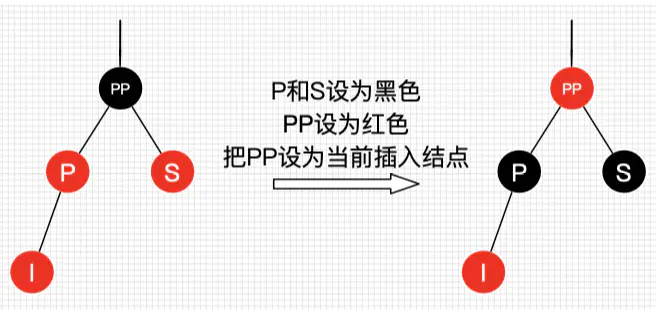
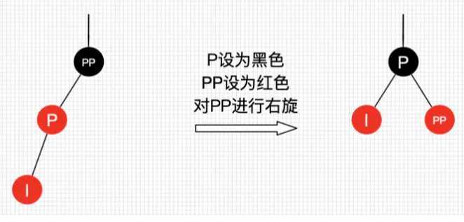
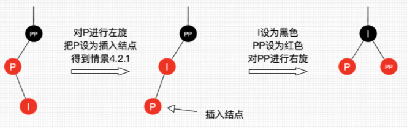
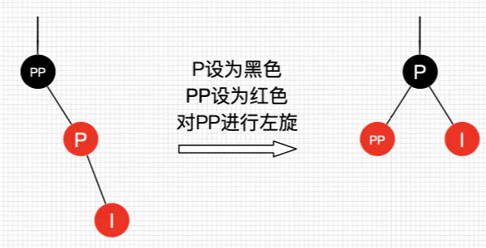
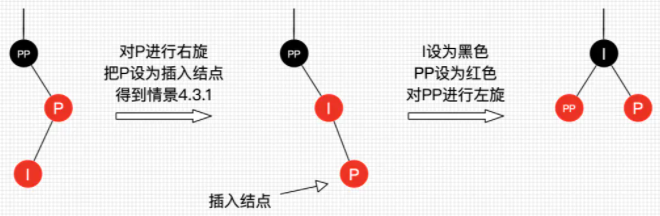

红黑树也许是应用最广泛的树结构, STL主要应用于map, set
红黑树
红黑树具有以下特征
- 性质1：每个节点要么是黑色，要么是红色。
- 性质2：根节点是黑色。
- 性质3：每个叶子节点（NIL）是黑色。
- 性质4：每个红色结点的两个子结点一定都是黑色。
- 性质5：任意一结点到每个叶子结点的路径都包含数量相同的黑结点。
性质5保证了, 任意一个结点到到每个叶子结点的路径都包含数量相同的黑结点。红黑树这种平衡为黑色完美平衡。
红黑树的平衡
相比于AVL树的左旋右旋, 红黑树平衡靠三种操作：左旋、右旋和变色。
红黑树的查找
和二叉搜索树的查找相同, 即从根节点开始进行二分查找, 直到节点为null。
/// 查找
template <class _Keyty>
_Tree_find_result<_Nodeptr> _Find_lower_bound(const _Keyty& _Keyval) const {
const auto _Scary = _Get_scary();
_Tree_find_result<_Nodeptr> _Result{_Scary->_Myhead};
_Nodeptr _Trynode = _Result._Location._Parent;
while (!_Trynode->_Isnil) {
_Result._Location._Parent = _Trynode;
/// #define _DEBUG_LT_PRED(pred, x, y) static_cast<bool>(pred(x, y))
/// 获取比较参数
/// 由于先比较大的, 因此返回的是不小于keyval的第一个元素
if (_DEBUG_LT_PRED(_Getcomp(), _Traits::_Kfn(_Trynode->_Myval), _Keyval)) {
/// result是一个位置对象
_Result._Location._Child = _Tree_child::_Right;
_Trynode = _Trynode->_Right;
} else {
_Result._Location._Child = _Tree_child::_Left;
_Result._Bound = _Trynode;
_Trynode = _Trynode->_Left;
}
}
return _Result;
}
/// 不大于keyval的第一个元素
template <class _Keyty>
_Tree_find_result<_Nodeptr> _Find_upper_bound(const _Keyty& _Keyval) const {
/// _Scary是一种迭代器
const auto _Scary = _Get_scary();
_Tree_find_result<_Nodeptr> _Result{
_Scary->_Myhead};
_Nodeptr _Trynode = _Result._Location._Parent;
while (!_Trynode->_Isnil) {
_Result._Location._Parent = _Trynode;
/// 先比较左边
if (_DEBUG_LT_PRED(_Getcomp(), _Keyval, _Traits::_Kfn(_Trynode->_Myval))) {
_Result._Location._Child = _Tree_child::_Left;
_Result._Bound = _Trynode;
_Trynode = _Trynode->_Left;
} else {
_Result._Location._Child = _Tree_child::_Right;
_Trynode = _Trynode->_Right;
}
}
return _Result;
}
template <class _Other>
_NODISCARD _Nodeptr _Find(const _Other& _Keyval) const {
/// 找到不大于keyval的第一个元素位置(大于等于)
const _Tree_find_result<_Nodeptr> _Loc = _Find_lower_bound(_Keyval);
/// 如果相等, 找到并返回
if (_Lower_bound_duplicate(_Loc._Bound, _Keyval)) {
return _Loc._Bound;
}
/// 返回_Myhead
return _Get_scary()->_Myhead;
}红黑树的插入
插入操作包括两部分工作：一查找插入的位置；二插入后自平衡。可以分析每个插入的场景
寻找插入的位置即按照查找的规则, 找到一个空位置(如果没有重复元素的话), 插入的节点设置为空节点
接下来是插入自平衡
红黑树为空树
最简单的一种情景，直接把插入结点作为根结点就行，但注意，根据红黑树性质2：根节点是黑色。还需要把插入结点设为黑色。插入结点的父结点为黑结点
这时候插入的结点是红色的，并不会影响红黑树的平衡，直接插入即可，无需做自平衡。插入结点的父结点为红结点
如果插入的父结点为红结点，那么该父结点不可能为根结点，所以插入结点总是存在祖父结点。
插入节点的父节点为红节点的几种情况
- 插入情景4.1：叔叔结点存在并且为红结点

处理方式,
- 将P和S设置为黑色
- 将PP设置为红色
- 把PP设置为当前插入结点
- 不用左旋右旋
这时候从根结点到叶子结点的路径中，黑色结点增加了。这也是唯一一种会增加红黑树黑色结点层数的插入情景。
- 插入情景4.2：叔叔结点不存在或为黑结点，并且插入结点的父亲结点是祖父结点的左子结点
这时候处理方式与AVL节点类似, 需要左旋右旋
- 插入结点是其父结点的左子结点, 将P设为黑色,将PP设为红色,对PP进行右旋

- 插入结点是其父结点的右子结点, 处理, 对P进行左旋, 把P设置为插入结点，得到插入节点是左子节点的情景, 进行上个情景的处理。

- 插入情景4.3：叔叔结点不存在或为黑结点，并且插入结点的父亲结点是祖父结点的右子结点, 该情景对应情景4.2，只是方向反转
- 插入结点是其父结点的右子结点, 将P设为黑色,将PP设为红色,对PP进行左旋

- 插入结点是其父结点的左子结点, 处理, 对P进行右旋, 把P设置为插入结点，得到插入节点是左子节点的情景, 进行上个情景的处理。

- 综上, 先找到插入的位置, 之后如果位置父节点为黑色, 直接插入, 如果父节点为红色, 且叔叔节点也是红色, 直接改变颜色就行
- 如果父节点为红色, 叔叔节点为黑或不存在。判断位置父节点和祖父节点关系, 如果是左节点, 整体需要右旋, 反之左旋。旋转后设置新的父节点为黑色, 旧的为红色。
stl的插入操作
/// 右旋, 针对根节点
/// 旋转后, 根节点(wherenode)的左子节点(pnode)到原根节点位置处
/// 当根节点wherenode是其父节点的左节点时, 发生右旋
void _Rrotate(_Nodeptr _Wherenode) noexcept { // promote left node to root of subtree
_Nodeptr _Pnode = _Wherenode->_Left;
_Wherenode->_Left = _Pnode->_Right;
if (!_Pnode->_Right->_Isnil) {
_Pnode->_Right->_Parent = _Wherenode;
}
/// pnode代替wherenode位置
_Pnode->_Parent = _Wherenode->_Parent;
/// 如果是根节点, 根节点设置为pnode
if (_Wherenode == _Myhead->_Parent) {
_Myhead->_Parent = _Pnode;
} else if (_Wherenode == _Wherenode->_Parent->_Right) {
_Wherenode->_Parent->_Right = _Pnode;
} else {
/// 设置其父左子节点为pnode
_Wherenode->_Parent->_Left = _Pnode;
}
/// 设置wherenode位置为_Pnode->_Right
_Pnode->_Right = _Wherenode;
_Wherenode->_Parent = _Pnode;
}
/// 左旋
void _Lrotate(_Nodeptr _Wherenode) noexcept { // promote right node to root of subtree
_Nodeptr _Pnode = _Wherenode->_Right;
_Wherenode->_Right = _Pnode->_Left;
if (!_Pnode->_Left->_Isnil) {
_Pnode->_Left->_Parent = _Wherenode;
}
_Pnode->_Parent = _Wherenode->_Parent;
if (_Wherenode == _Myhead->_Parent) {
_Myhead->_Parent = _Pnode;
} else if (_Wherenode == _Wherenode->_Parent->_Left) {
_Wherenode->_Parent->_Left = _Pnode;
} else {
_Wherenode->_Parent->_Right = _Pnode;
}
_Pnode->_Left = _Wherenode;
_Wherenode->_Parent = _Pnode;
}
/// 插入节点
_Nodeptr _Insert_node(const _Tree_id<_Nodeptr> _Loc, const _Nodeptr _Newnode) noexcept {
++_Mysize;
const auto _Head = _Myhead;
_Newnode->_Parent = _Loc._Parent;
/// 在head处插入节点
if (_Loc._Parent == _Head) { // first node in tree, just set head values
_Head->_Left = _Newnode;
_Head->_Parent = _Newnode;
_Head->_Right = _Newnode;
_Newnode->_Color = _Black; // the root is black
return _Newnode;
}
_STL_INTERNAL_CHECK(_Loc._Child != _Tree_child::_Unused);
if (_Loc._Child == _Tree_child::_Right) { // add to right of _Loc._Parent
_STL_INTERNAL_CHECK(_Loc._Parent->_Right->_Isnil);
_Loc._Parent->_Right = _Newnode;
if (_Loc._Parent == _Head->_Right) { // remember rightmost node
_Head->_Right = _Newnode;
}
} else { // add to left of _Loc._Parent
_STL_INTERNAL_CHECK(_Loc._Parent->_Left->_Isnil);
_Loc._Parent->_Left = _Newnode;
if (_Loc._Parent == _Head->_Left) { // remember leftmost node
_Head->_Left = _Newnode;
}
}
/// _Pnode = _Newnode, 即插入pnode, 且其父为红色
for (_Nodeptr _Pnode = _Newnode; _Pnode->_Parent->_Color == _Red;) {
/// 插入位置父节点是爷爷的左边
if (_Pnode->_Parent == _Pnode->_Parent->_Parent->_Left) { // fixup red-red in left subtree
/// 叔叔节点
const auto _Parent_sibling = _Pnode->_Parent->_Parent->_Right;
/// 叔叔节点是红色, 只要改变颜色, 不用旋转
if (_Parent_sibling->_Color == _Red) { // parent's sibling has two red children, blacken both
_Pnode->_Parent->_Color = _Black;
_Parent_sibling->_Color = _Black;
_Pnode->_Parent->_Parent->_Color = _Red;
_Pnode = _Pnode->_Parent->_Parent;
} else { // parent's sibling has red and black children
/// 叔叔节点是黑或者不存在, 需要右旋
/// pnode是其父的右节点, 先以其父为中心左旋
if (_Pnode == _Pnode->_Parent->_Right) { // rotate right child to left
_Pnode = _Pnode->_Parent;
/// 注意Lrotate输入的是子树根节点, 返回的已经变成左节点了(根旋转到了左边)
_Lrotate(_Pnode);
}
/// 以pnode的爷爷为中心右旋
_Pnode->_Parent->_Color = _Black; // propagate red up
_Pnode->_Parent->_Parent->_Color = _Red;
_Rrotate(_Pnode->_Parent->_Parent);
}
} else { // fixup red-red in right subtree
const auto _Parent_sibling = _Pnode->_Parent->_Parent->_Left;
if (_Parent_sibling->_Color == _Red) { // parent's sibling has two red children, blacken both
_Pnode->_Parent->_Color = _Black;
_Parent_sibling->_Color = _Black;
_Pnode->_Parent->_Parent->_Color = _Red;
_Pnode = _Pnode->_Parent->_Parent;
} else { // parent's sibling has red and black children
if (_Pnode == _Pnode->_Parent->_Left) { // rotate left child to right
_Pnode = _Pnode->_Parent;
_Rrotate(_Pnode);
}
_Pnode->_Parent->_Color = _Black; // propagate red up
_Pnode->_Parent->_Parent->_Color = _Red;
_Lrotate(_Pnode->_Parent->_Parent);
}
}
}
/// 设置颜色(如果其父节点是黑色)
_Head->_Parent->_Color = _Black; // root is always black
return _Newnode;
}红黑树的迭代器
- 红黑树迭代器的
++, 基于红黑树对象的operator++()实现/// 迭代器递增 _Tree_unchecked_const_iterator& operator++() noexcept { /// 没有右子树 if (_Ptr->_Right->_Isnil) { // climb looking for right subtree _Nodeptr _Pnode; /// 这段代码表示, 如果Ptr是父亲的右节点, 要一直提升, 直到Ptr是父亲的左节点(这时候父节点就是下一个节点) while (!(_Pnode = _Ptr->_Parent)->_Isnil && _Ptr == _Pnode->_Right) { _Ptr = _Pnode; // ==> parent while right subtree } _Ptr = _Pnode; // ==> parent (head if end()) } else { /// 如果有右子树, 返回右子树最小值(即一直左遍历) _Ptr = _Mytree::_Min(_Ptr->_Right); // ==> smallest of right subtree } return *this; } /// 迭代器递减 _Tree_unchecked_const_iterator& operator--() noexcept { if (_Ptr->_Isnil) { // 根节点 char _Isnil; // true only if head (also nil) node; TRANSITION, should be bool _Ptr = _Ptr->_Right; // end() ==> rightmost } /// 没有左子树的话 else if (_Ptr->_Left->_Isnil) { // climb looking for left subtree _Nodeptr _Pnode; /// 一直提升, 直到Ptr是父亲的右子节点(不满足while循环跳出) while (!(_Pnode = _Ptr->_Parent)->_Isnil && _Ptr == _Pnode->_Left) { _Ptr = _Pnode; // ==> parent while left subtree } if (!_Ptr->_Isnil) { // decrement non-begin() _Ptr = _Pnode; // ==> parent if not head } } else { /// 左子树的最大值 _Ptr = _Mytree::_Max(_Ptr->_Left); // ==> largest of left subtree } return *this; }